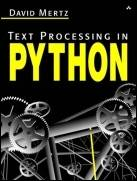

| [ Team LiB ] |
|
|  | |
| • | Table of Contents |
| Text Processing in Python | ||
| By David Mertz | ||
| Publisher | : Addison Wesley | |
| Pub Date | : June 06, 2003 | |
| ISBN | : 0-321-11254-7 | |
| Pages | : 544 | |
Text Processing in Python is an example-driven, hands-on tutorial that carefully teaches programmers how to accomplish numerous text processing tasks using the Python language. Filled with concrete examples, this book provides efficient and effective solutions to specific text processing problems and practical strategies for dealing with all types of text processing challenges.
Text Processing in Python begins with an introduction to text processing and contains a quick Python tutorial to get you up to speed. It then delves into essential text processing subject areas, including string operations, regular expressions, parsers and state machines, and Internet tools and techniques. Appendixes cover such important topics as data compression and Unicode. A comprehensive index and plentiful cross-referencing offer easy access to available information. In addition, exercises throughout the book provide readers with further opportunity to hone their skills either on their own or in the classroom. A companion Web site (http://gnosis.cx/TPiP) contains source code and examples from the book.
Here is some of what you will find in thie book:
When do I use formal parsers to process structured and semi-structured data? Page 257
How do I work with full text indexing? Page 199
What patterns in text can be expressed using regular expressions? Page 204
How do I find a URL or an email address in text? Page 228
How do I process a report with a concrete state machine? Page 274
How do I parse, create, and manipulate internet formats? Page 345
How do I handle lossless and lossy compression? Page 454
How do I find codepoints in Unicode? Page 465
| [ Team LiB ] |
|